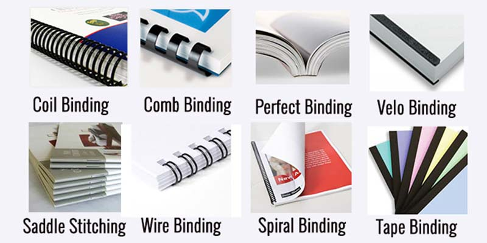

Setelah selesai mencetak dokumen, langkah selanjutnya adalah menjilid agar halaman tidak tercecer dan terlihat rapi. Namun, banyak orang bingung memilih jenis jilid yang tepat. Di MedanPrint, kami menyediakan tiga layanan jilid utama: ring plastik, kawat/spiral, dan glue binding (lem panas). Artikel ini akan membantu Anda memahami perbedaan, kelebihan, dan kekurangan masing-masing.
1. Jilid Ring Plastik
Jilid ring plastik menggunakan ring berbahan plastik yang dimasukkan ke dalam lubang pada pinggir dokumen. Ring tersedia dalam berbagai ukuran dan warna.
Kelebihan:
- Mudah dibuka dan ditambah halaman.
- Ringan dan praktis.
- Pilihan warna ring (putih, hitam, biru, dll).
- Cocok untuk makalah, laporan, modul pelatihan.
Kekurangan:
- Ring bisa longgar jika sering dibuka-tutup.
- Tidak bisa berdiri sendiri di rak.
2. Jilid Kawat / Spiral
Jilid kawat menggunakan kawat yang dijalin melalui lubang-lubang pada pinggir dokumen. Biasanya menggunakan mesin khusus untuk melipat kawat rapat.
Kelebihan:
- Sangat rapat dan kokoh.
- Tidak mudah lepas.
- Cocok untuk buku catatan, kalender, dokumen yang sering dibuka.
Kekurangan:
- Sulit ditambah halaman setelah dijilid.
- Kawat bisa berkarat jika terkena air (tapi jarang).
3. Glue Binding (Lem Panas)
Glue binding atau jilid lem panas menggunakan lem khusus yang dipanaskan untuk merekatkan punggung dokumen dengan sampul. Hasilnya rapi seperti softcover buku.
Kelebihan:
- Tampilan rapi dan profesional.
- Punggung dokumen bisa diberi teks.
- Cocok untuk skripsi, tesis, laporan tahunan, buku panduan.
Kekurangan:
- Tidak bisa dibuka lebar-lebar (membutuhkan tekanan).
- Jika lem kering, halaman bisa lepas (jarang terjadi jika berkualitas).
Perbandingan Cepat
| Jenis Jilid | Kelebihan Utama | Cocok untuk | Estimasi Harga |
|---|---|---|---|
| Ring Plastik | Mudah dibuka, bisa ditambah halaman | Makalah, laporan, modul | Rp 5.000 - 10.000 |
| Kawat / Spiral | Kokoh, rapat | Buku catatan, kalender | Rp 7.000 - 15.000 |
| Glue Binding | Rapi, profesional | Skripsi, laporan tahunan, buku | Rp 10.000 - 20.000 |
Tips Memilih Jilid yang Tepat
- Untuk makalah atau laporan yang perlu direvisi, pilih ring plastik agar mudah dibuka dan ditambah halaman.
- Untuk dokumen yang sering dibuka (seperti buku catatan), pilih kawat/spiral agar lebih awet.
- Untuk tugas akhir, laporan resmi, atau buku yang ingin tampil profesional, pilih glue binding.
Butuh jasa jilid untuk dokumen Anda? Konsultasi gratis dengan tim MedanPrint.
Chat WhatsApp Lihat Layanan JilidDi MedanPrint, semua jenis jilid dikerjakan dengan mesin profesional dan bahan berkualitas. Hasil rapi, harga bersahabat. Silakan hubungi kami untuk konsultasi lebih lanjut.